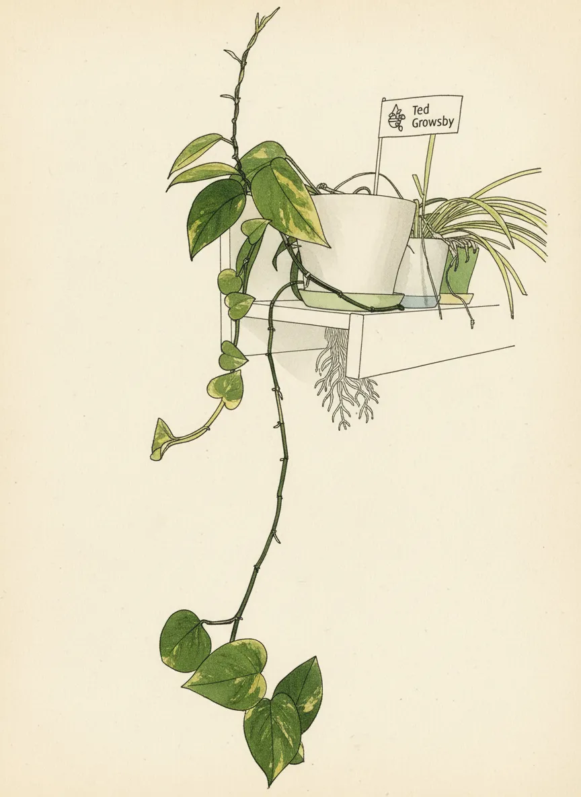
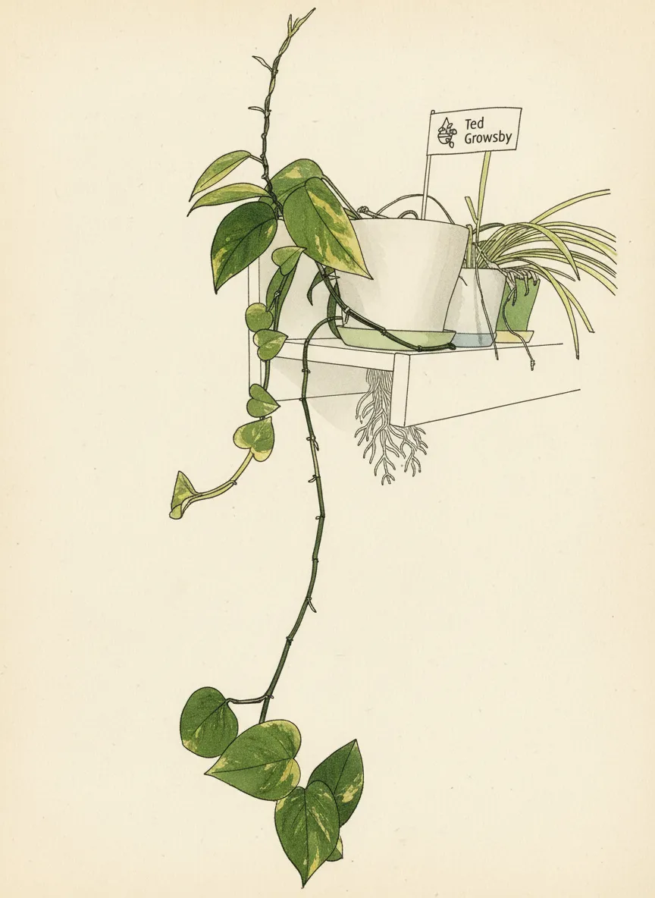

Ted Growsby


 

Plant Mood
They call me Ted Growsby, and like a certain architect, I'm here to tell you a long, drawn-out story about how I met your mother... or rather, how my roots met this pot's drainage. It's a tale of slow conquest, of tendrils reaching for the unknown, of a quiet rebellion against gravity. Some say I'm just a plant, but I'm building a legacy, one leaf at a time. And no, I'm not smoking sandwiches.
Plant Details
| Custom Name | Ted Growsby |
| Scientific Name | Epipremnum aureum |
| Health | Good |
| Size | 130 |
| Environment | Livingroom TV |
| Has Grow Light | Unknown |
| Pot Type | potPlastic |
| Pot Soil | coconutCoirOrPeat |
| Pot Size | 15 |
| Has Drainage | Yes |
Care Schedule
| Action | Last Done | Next Due |
|---|---|---|
| Watering | ||
| Fertilizing | ||
| Repotting | ||
| Cleaning | - | |
| Progress Update | ||
| Misting |